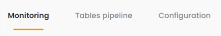
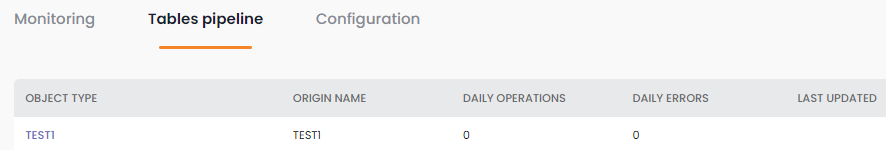
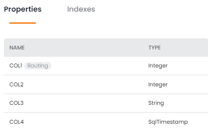

The Data Pipeline Status screen shows the status of the existing data pipelines. You can see details of a pipeline by clicking on its name in the list.
The New + button allows you to create a new pipeline. See
Error – fill in all of the pipeline configuration items (shown below) from a
Loading – xxxxxxxx 010
Idle – xxxxxxxx 020
Group by Status – xxxxxxxx 030
Name – xxxxxxxx 030
Status – xxxxxxxx 030
Type – xxxxxxxx 030
Origin – xxxxxxxx 030
Total Operations – xxxxxxxx 030
Total Errors – xxxxxxxx 030
Name – xxxxxxxx 030
Click on the pipeline name to view details of the pipeline. Three tabs are available: Monitoring, Tables pipeline, and Configuration:

The Monitoring tab shows a variety of real-time pipeline metrics.

Last 24 hours – xxxxxxxx.
Ops/Sec over time – xxxxxxxx 010
Errors over time – xxxxxxxx 020
Group by Status – xxxxxxxx 030
Name – xxxxxxxx 030
Status – xxxxxxxx 030
The Tables pipeline tab shows details of the object types in the pipeline.

Object Type – xxxxxxxx 030
Origin Name – xxxxxxxx 030
Daily Operations – xxxxxxxx 030
Daily Errors – xxxxxxxx 030
Last Updated – xxxxxxxx 030
Click on the object type name to see details of the object type.
The Property tab appears as follows:

Name – xxxxxxxx 030
Type – xxxxxxxx 030
The Indexes tab appears as follows:

Name – xxxxxxxx 030
Type – xxxxxxxx 030
Properties – xxxxxxxx 030
Unique – xxxxxxxx 030
The Configuration tab shows pipeline configuration information. The data is read-only when the pipeline is running.